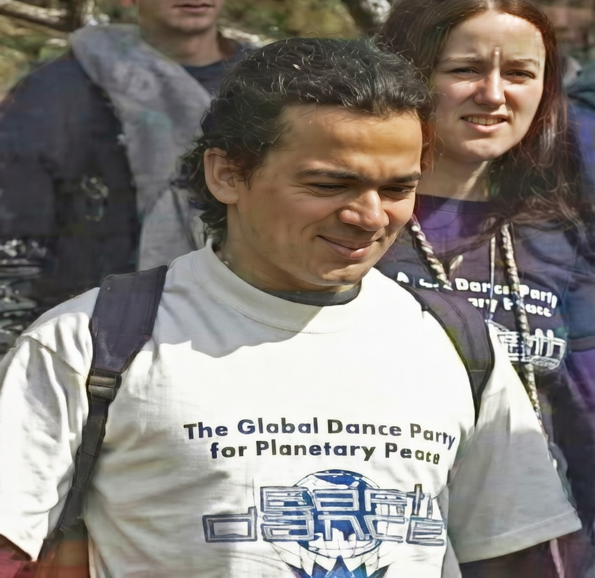
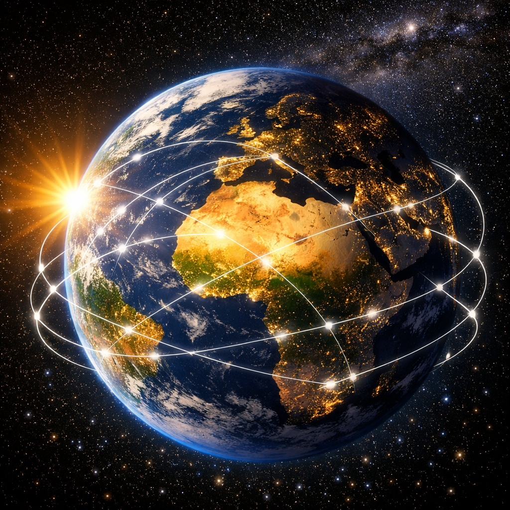
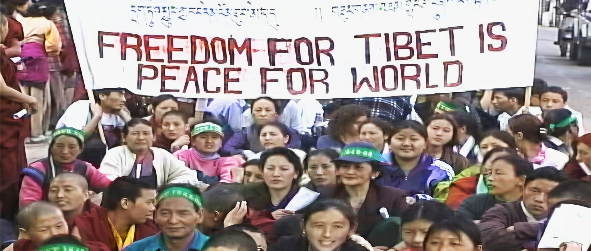
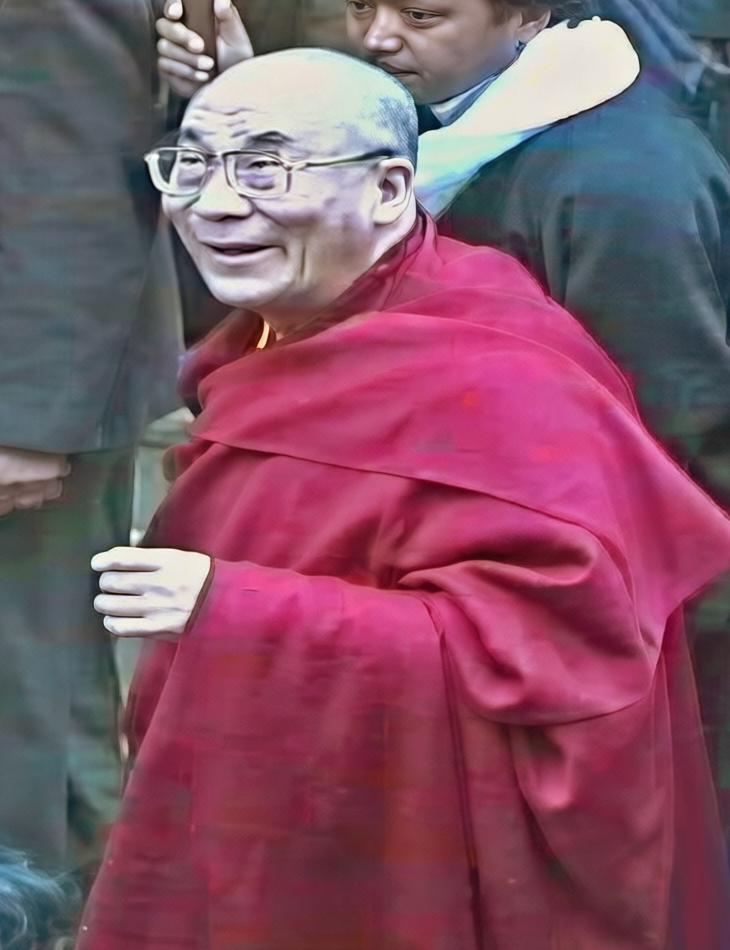
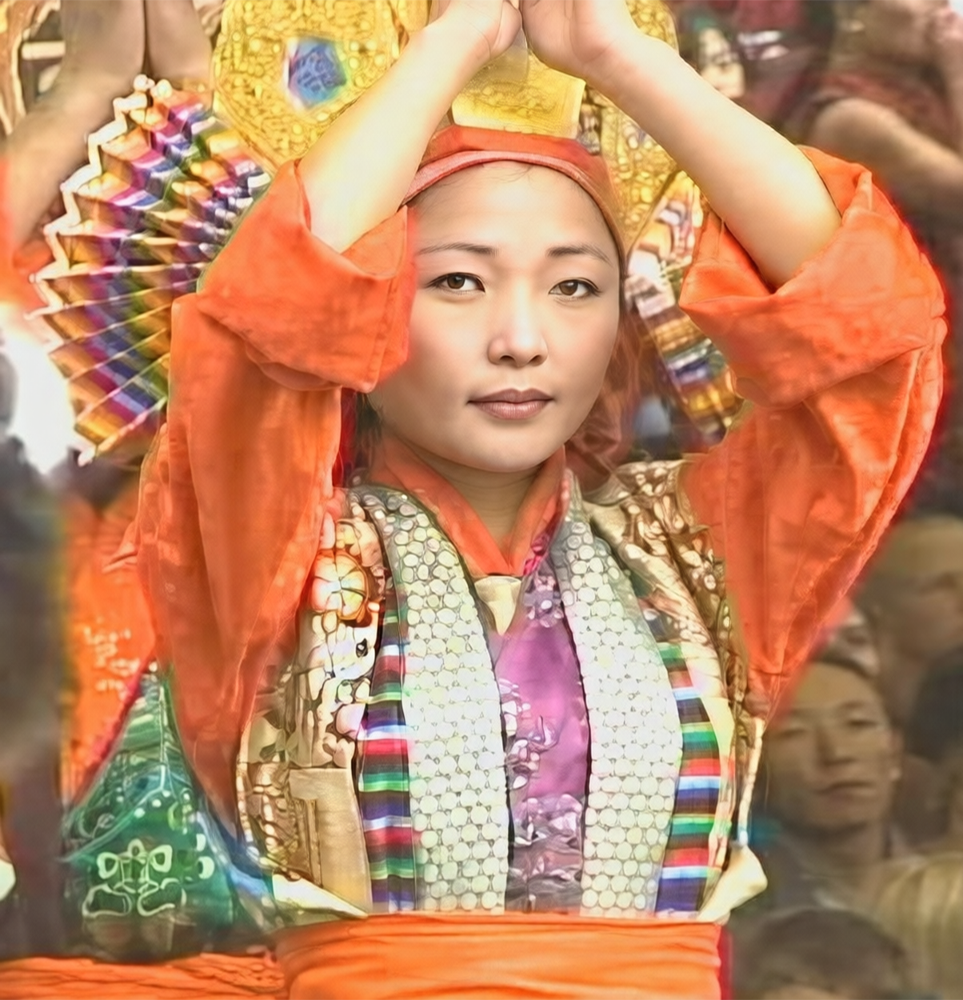
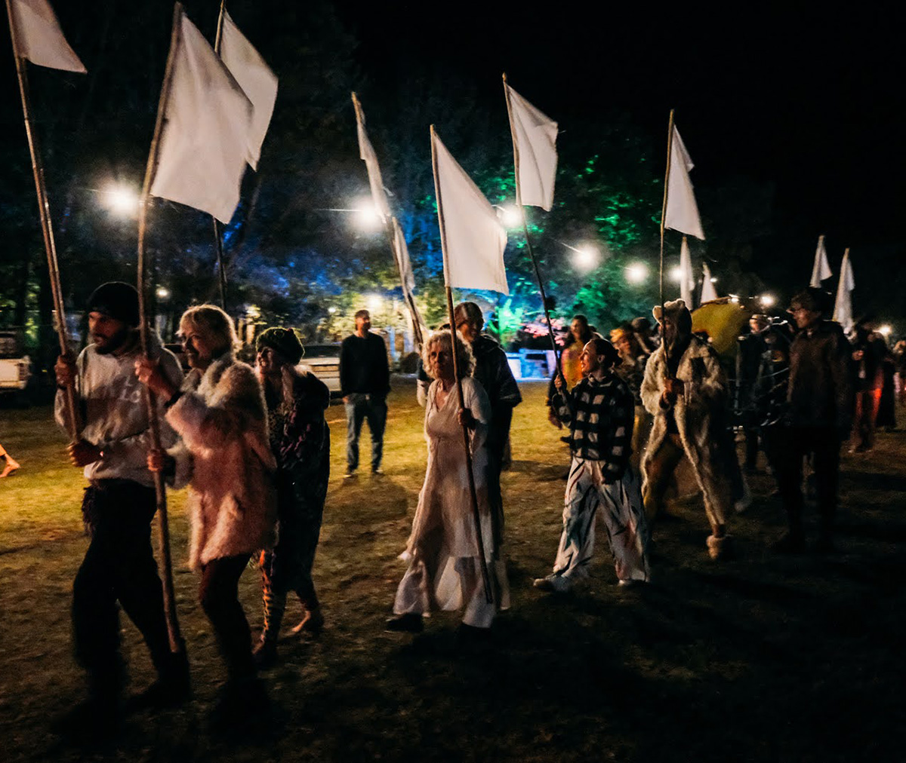

Earthdance: A Global Vision of Unity Through Dance
Dancing to EDM genres like psy-trance and techno offers an intrinsically joyful and ecstatic experience. From the harmonious, respectful culture surrounding this transformative music emerged the concept of a worldwide moment of collective consciousness to illuminate the planet. Thus, Earthdance was born—an event that has united people globally for 29 years.
One vision, decades in motion
From a single vision in the late 1990s, Earthdance grew into a worldwide movement of linked gatherings, shared ceremony and collective intention.
Where the idea began
The idea of Earthdance originated in the late 1990s as psy-trance emerged as a distinct genre from techno. Psy-trance culture has long drawn on ideas and musical forms from eastern mysticism, particularly through its Goa Trance roots, blending powerful dance melodies with lyrics about consciousness or transcendental awareness.
The inspiration for Earthdance took shape in the mind of Chris Dekker, a New Zealander of mixed Māori heritage who ran the London club and record label Return to the Source. Chris says the idea came to him while meditating in a pyramid in Egypt, where he envisioned pinpoints of light erupting across the world’s surface, connecting into a shining web symbolizing global unity. This inspired a synchronized global dance party aimed at fostering higher consciousness.

The first global link-up
In 1997, leveraging his international psy-trance network, Dekker launched Earthdance as a linked series of dancefloors with a synchronized ceremony. At its core is the Prayer for Peace, a modern hymn by songstress Asheera Hart, performed simultaneously at 12pm GMT on every dancefloor as a shared pledge to peace. The inaugural event on October 4, 1997, featured 22 parties across 18 countries, centered on the Tibetan cause as a symbol of both freedom and resonance with spiritual consciousness.
Since then, more than 700 Earthdance events have taken place in over 50 countries, from Brazil to the United States, Europe, Japan, Australia, and South Africa. Today, South Africa stands as a leading nation with four annual Earthdance parties in Johannesburg, Nelson Mandela Bay, the Garden Route, and Cape Town.

"Pinpoints of light erupting across the world’s surface, connecting into a shining web symbolizing global unity."
Dharamsala and the global conference
In 1999, Dekker convened a global conference in Dharamsala, India—the seat of the Tibetan community in exile—where party producers, DJs, and dancers from many countries came together to map out a template for Earthdance events worldwide. Among other activities they met with the Dalai Lama, then patron of Earthdance. They also took part in a ‘Free Tibet’ march with the local people. This gathering reinforced the event’s dual foundation in activism and the spiritual awareness which manifests in trance dancing.


The shared moment at the centre
Ceremony plays a central role in Earthdance, focusing collective attention during the global link-up. Inspired by dancer Leolah Antarra’s ceremonies at Return to the Source, the link-up invites thousands worldwide to pause their dancing to be conscious of our shared humanity on Earth. In that moment of planetary awareness we recognize the value of peace, harmony, and our responsibility to accept and tolerate one another across our different cultures in order for humanity to thrive.
The core mission of Earthdance is to harness music and dance festivities to celebrate life while advancing peace, sustainability, and social justice. Events link with non-profit organizations, directing a portion of profits toward their causes. The overarching vision emphasizes personal and collective transformation: awakening self-awareness, health, and spiritual growth as the foundation for a better world. Through dance, music and reflection, Earthdance nurtures a movement of peace and renewal in the belief that individual change can forge a brighter collective future.


Twenty-nine years in, and still dancing for peace
The next link-up is this September, and the farm is two hours from Cape Town.